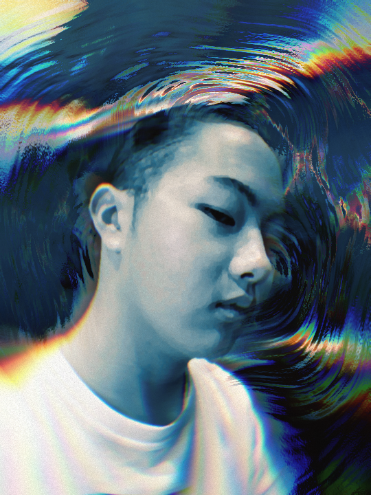
TappeiKajikawa - 梶川達平
日本航空高等学校 通信課程
MVを中心にモーショングラフィックスや3DCGの映像を制作している。
自主制作を通しCGMに魅力を感じ、
映像を通して作家性を探求したいと考えている。
tools
- DDC - Cinema 4D
- Render - Redshift
- motion/comp - After Effects
showreel
works
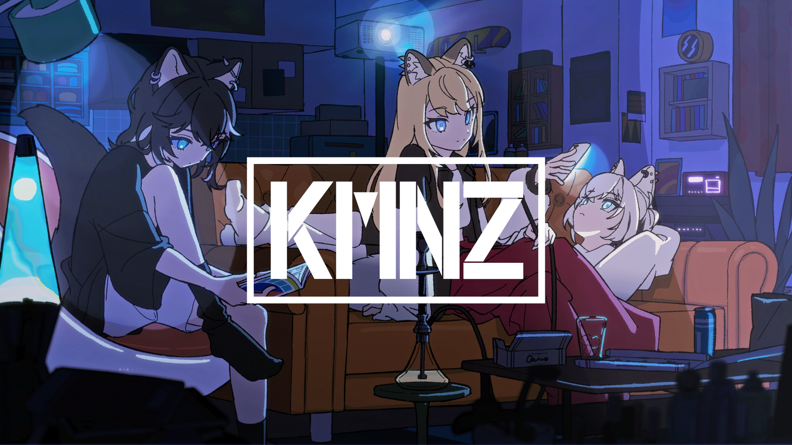
Ride On / KMNZ [Official Music Video]
アニメーションの撮影、モーショングラフィックスを担当しました。
アニメーターのがーこさんと協力し陰影部分の撮影を調整しました。
また、ダウナーかつ近代的な空気感を演出するためにレンズ効果を用いて調整しました。
MC - KMNZ
lyrics - Takumi Sudo
music/arrange - TAXON
illustration/animation - がーこ
video - TappeiKajikawa
cliant - RK Music
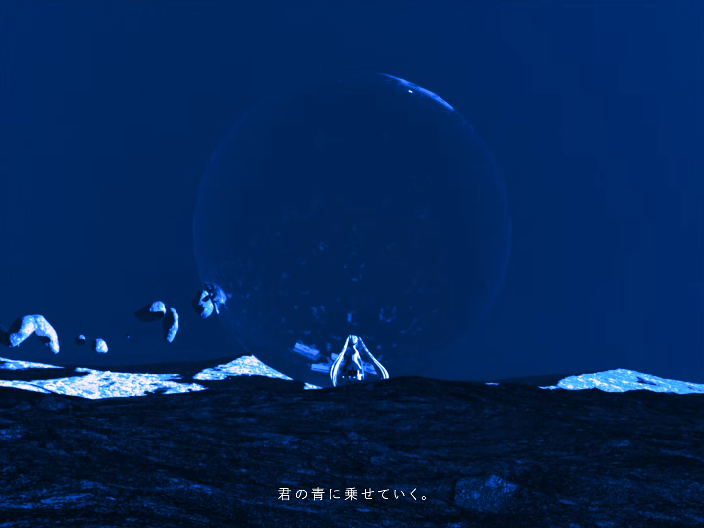
二次創作 / 椎乃味醂 - 青
自主制作として椎乃味醂さんの楽曲「青」をPVSF2026Sで公開しました。
「青」に対して、ゴッホの「青の時代」をモチーフにしている/合うと考えたました。
表現、エフェクト、動きなど緩急がつきやすいコンテを制作しました。
表現としてはモーショングラフィックス、デジアナ(*)、3DCG、ストップアニメーションを用いました。
また、全体的にKuwahara filterをメインに油彩画のようなルックを意識しました。
original - 青（ft. 初音ミク）
music - 椎乃味醂
video - TappeiKajikawa
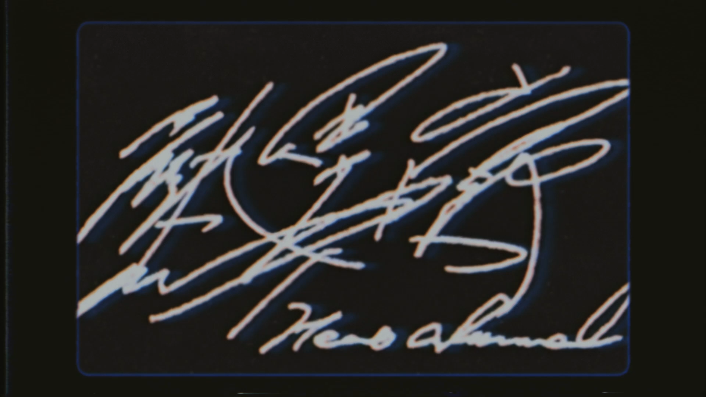
二次創作 / いよわ - 熱異常
自主制作としていよわさんの楽曲「熱異常」をPVSF2025Sで公開しました。
パーティクルを使った表現や抽象的なモデルを使い、楽曲のイメージに合わせました。
VHSやgreinを用いたり、あえてきつい色にすることで現代らしさや異物感を演出しました。
pixel soterやTurbulent Displaceなどディストーション系のエフェクトを多く使うことで不安感が出るよう意識しました。
original - 熱異常 / いよわ feat.足立レイ（Heat abnormal / Iyowa feat.Adachi Rei）
music - いよわ
video - TappeiKajikawa
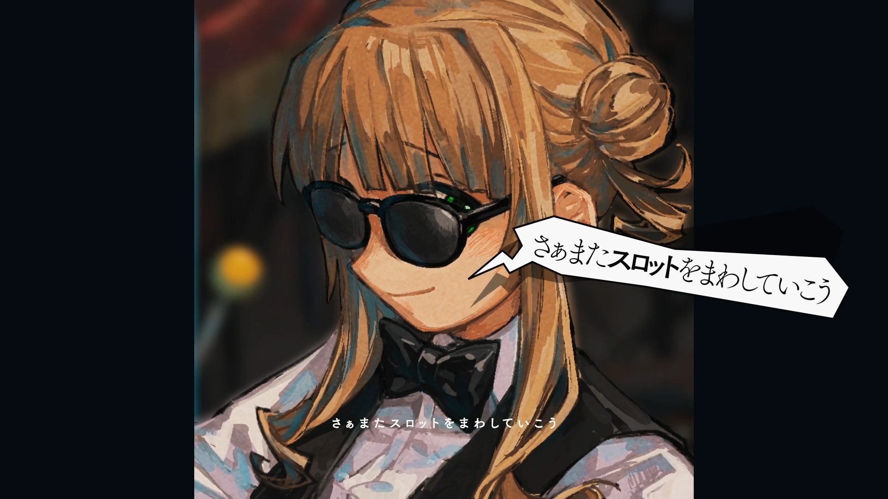
Don't you Bet? 【鏑木ろこ非公式イメージソング】
1枚絵のイラストを用いて2DのMVを制作しました。
vocal - ゲキヤク
music - 淋翁
illustration - KAN
video - TappeiKajikawa
cliant - 淋翁 (individual)
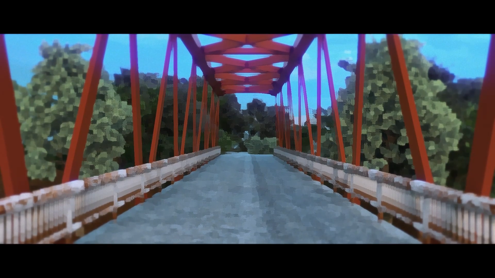
自主制作 - play back
music - Bounce
music provided - evala
video - TappeiKajikawa
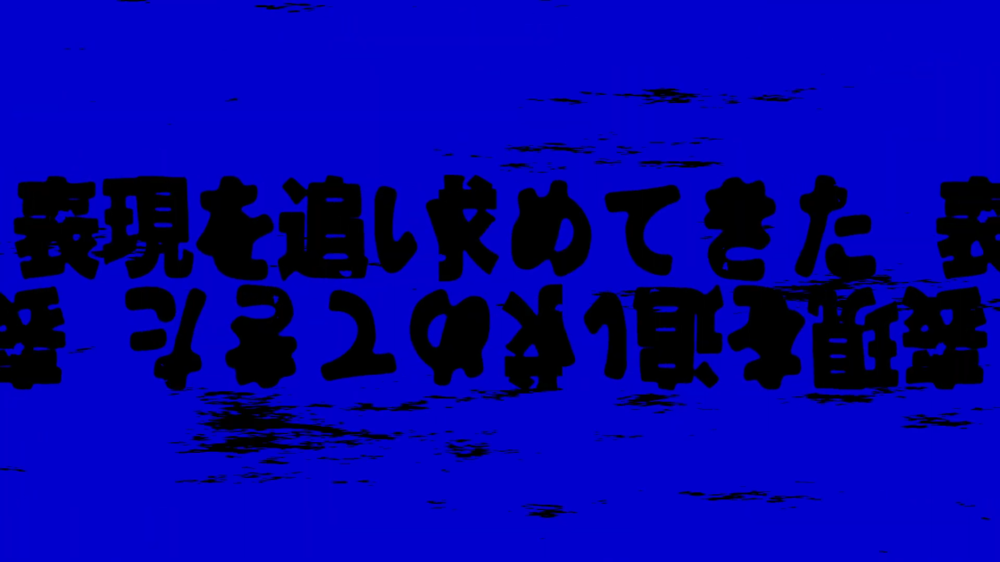
二次創作 / 椎乃味醂 - OSINT
original - OSINT - 歌愛ユキ·結月ゆかり·重音テト
music - 椎乃味醂
video - TappeiKajikawa
archive
2025.11 Ride On / KMNZ [Official Music Video] RK Music
2025.09 夜警／歌愛ユキ せ。 (individual)
2025.08 もう解けぬ花氷 / ノルfeat.初音ミク - A little warmth / Noru feat.miku 藤原昇大/ノル (individual)
2025.07 デンシセンチメンタル／歌愛ユキ せ。 (individual)
2025.06 Don't you Bet? 【鏑木ろこ非公式イメージソング】 淋翁 (individual)
2025.03 【リゼロ】theater D / MYTH & ROID 歌ってみた 葉つつゆ (individual)
2024.11 Abekobe / ゑづばらゑ feat. 重音テト & ずんだもん edubarae (individual)
2024.10 【中性歌い手が】心という名の不可解 歌ってみた / 溯-saku- 溯-saku- (individual)
2024.09 toLOVEle?! / ノルfeat.flower - toLOVEle?! / Noru feat.flower 藤原昇大/ノル (individual)
2024.08 【ドSイケボ3人で】ロコローション／さとみ×そうま×しゆん【歌ってみた】 STPR Inc.
2024.07 カタコトな過多言葉／歌愛ユキ せ。 (individual)
other
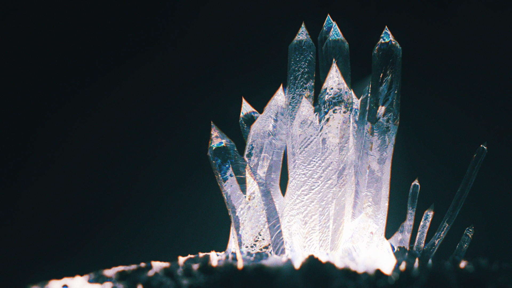
crythral
Cinema 4Dでクリスタルを作成し、After Effectsでコンポジットしました。
Cinema 4D, After Effects, RedShift, Looks
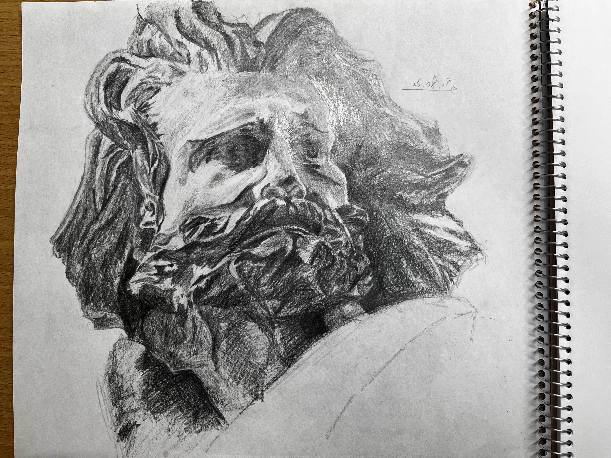
髭の男
4時間ほどで髭の男のデッサンをしました。
鉛筆
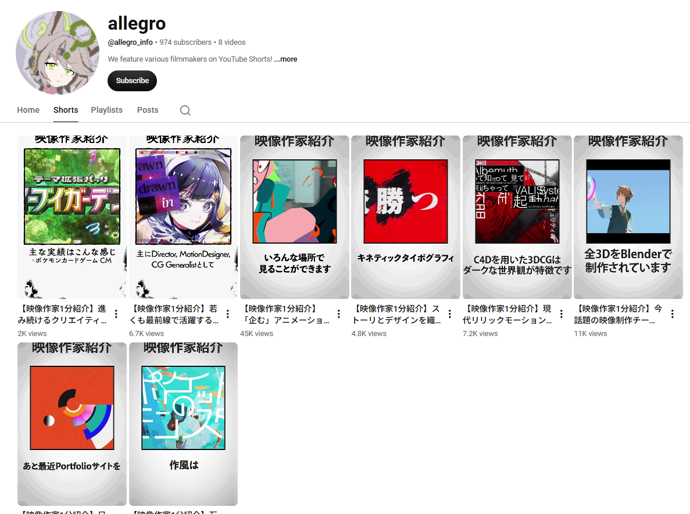
映像作家1分紹介
Yotube Shortsで映像作家の方を紹介しています。
Youtube, After Effects
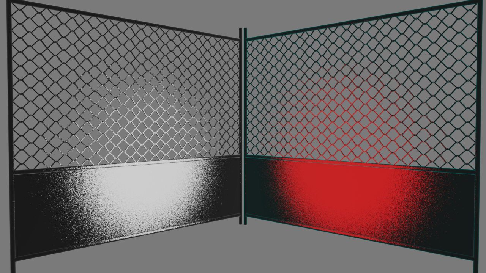
material
Cinema 4D - RedShiftでマテリアルの練習をしました。
Cinema 4D, RedShift
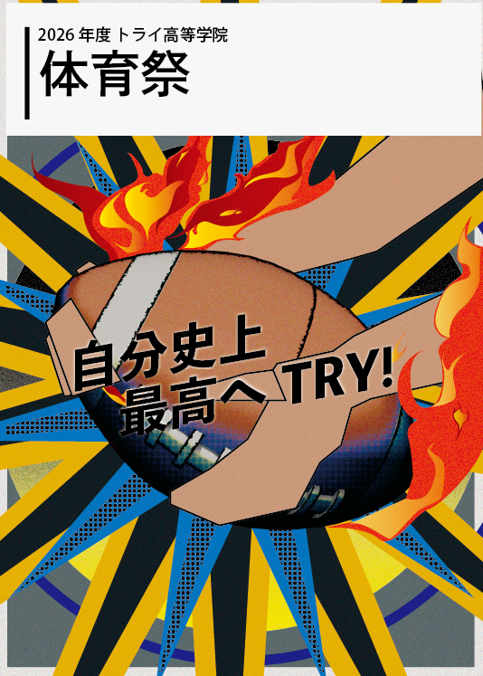
体育祭のしおり (表紙)
所属している学校の体育祭のしおりを制作しました。
illustrator, Cinema4D
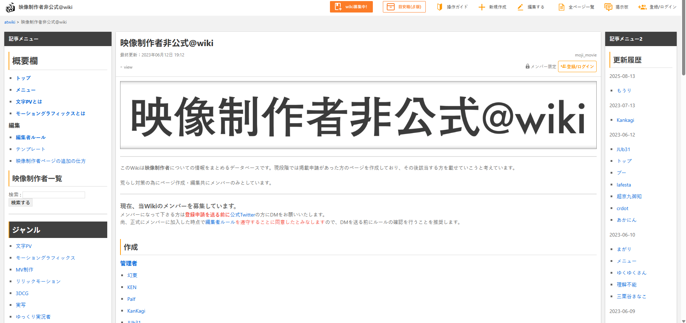
映像制作者非公式wiki
自分の周りを中心に、映像制作者のまとめwikiをチームで制作しました。
@wiki